library(tidyverse)
library(brms)
library(cmdstanr)
library(tidybayes)
library(modelr)
# data from Ebeling et al. 2021 https://doi.org/10.1111/1365-2745.13801
# retrieved from https://datadryad.org/dataset/doi:10.5061/dryad.gf1vhhmqs
data = read_delim("data_LeafDamage_NutNet.csv", delim = ";") %>%
select(site, plot, experimental_treatment,
functional_group, taxon, taxon_replicate.plot,
invert_damage.perc) %>%
rename(treat = experimental_treatment,
fgroup = functional_group) %>%
filter(fgroup != "WOODY") %>%
mutate(fgroup = factor(fgroup,
levels = c("GRASS","FORB","LEGUME")),
# just making sure observations conform to the midpoint rule
invert_damage.perc = case_when(invert_damage.perc == 0 ~ 0,
invert_damage.perc <= 5 ~ 3,
invert_damage.perc <= 25 ~ 15,
invert_damage.perc > 25 ~ 63),
logdam = log(invert_damage.perc + 1))
warning
This is not the finished product. There are probably more errors and nonsense than usual.
what the %$@#!?
When we measure the density of phytoplankton per volume of water or the body-mass of ground beetle individuals, our observations take specific values (45 cells in the sample volume, 45mg for this beetle). These observations have sampling error (a different sample from the same observational unit would contain more or less than 45 cells) and measurement error (the scale we use to measure beetle mass has precision limits) and this error is often unknown.
Now consider the flip side of this: observations that are inherently imprecise because all we know is that they fall within a certain range or beyond a limit of measurement. In this case, we know only the bounds of measurement error but we do not have a specific value to assign on each observation. This is censoring.
If an observation falls below the threshold of what a device can measure, the device will show zero. In practice, this zero stands for “less than the minimum” and is indistinguishable from a true zero (when the thing you are measuring is really absent). This is left censoring. When we get the largest value a device can measure, we have right censoring.
Interval censoring is perhaps the most intuitive case; we know the true value falls within a specific range—say more than 5 and up to 10 i.e. (5, 10]. Censoring can be a feature rather than a bug; in my broad neighbourhood in ecology, the typical example would be protocols designed for vegetation cover surveys, such as the Daubenmire scale (Daubenmire 1959). Under such a measurement scheme, observations are assigned in one of several distinct classes: 0%, (0, 5]%, (5, 25]%, (25, 50]% and so on, of ground covered by vegetation. The exact intervals will vary from case to case. Collecting data in this approximate fashion can be efficient and a standardized scheme ensures consistency among different surveyors.
In this post, I will use as an example case a study (Ebeling et al. 2021) that used a similar scheme to quantify leaf damage from herbivory by assigning each observation (the proportion of damage on an individual leaf) to one of four categories 0%, (0, 5]%, (5, 25]%, (25, 100)%. Notice that the scale starts with a precise zero (absence of damage) followed by increasingly large intervals. Even leaves of the same species will vary in size and exact shape; the more of a leaf that has been eaten away, the harder it is to specify the exact proportion of damage.
The question is then, how to best analyze data that have been collected in such a way? We are going to consider some of the available options. Let’s dive in!
the study
Ebeling et al 2021 studied the effect that nutrient addition can have on herbivory1 damage to grassland plants. They did so in plots of the Nutrient Network (REF) a globally distributed experiment of nutrient addition effects on grassland plant diversity and productivity. The study is open access, so you go can dig into it for details. It’s a really nice study! Here, I will provide the bare necessities: each location has control plots and treatment plots that have received either Nitrogen or Phosphorus or both. Leaf damage from herbivores was evaluated on one fully expanded leaf from five individuals per species per functional group (that is, grasses, forbs and legumes). As already mentioned, each leaf was assigned to one of four categories: 0%, (0, 5]%, (5, 25]% or (25, 100)% damage. The study actually covers more ground than that but, for our purposes, we will focus on one specific analysis. So the empirical question is, does nutrient addition have an influence on herbivory damage and does that influence vary among functional groups? The practical question which is the topic of this post, is what kind of model do we need to answer that empirical question.
caveat lector
I am a stats enthusiast—I enjoy thinking about and doing statistics—but I am not a statistician. Occasionally, while reading a paper in my field, I think hang on, I believe there may be a better way to do this analysis. Posts like this are the product of that thought process. My main motivation is curiosity and the opportunity to sharpen my own skills. This is largely self-study but if you read along and find something useful, I am glad it helped. If you do spot my errors or something that doesn’t quite make sense, I would appreciate the feedback.
yolo
Good ol’ linear regression is notoriously2 robust to having its assumptions violated. Arguably the chaotic neutral option here, is to rely on this legendary robustness and keep it simple. Which, as it happens, is what the authors of the original study did: they used the midpoint value of each range to represent the range of each observation. They then log(x+1) transformed those values and fitted a model with a Gaussian distribution. Clutch your pearls if you must; I’m going to spoil this right here by saying that this model leads to more or less the same conclusions as anything fancier we’ll try later on.
We begin by (more or less) retracing their steps.
Our model has two categorical predictors3, treatment and functional group, as well as their interaction, as main effects. Then intercepts4 vary by site, taxon, and taxon within plot. Aside from the changed treatment coding, this model is the Bayesian equivalent to the one reported in Table S5 in Ebeling et al. (2021).
S5.1 = brm(
data = data,
bf(
logdam ~ treat + fgroup + treat:fgroup +
(1 | site) +
(1 | taxon) +
(1 | site:plot:taxon)
),
family = gaussian(),
iter = 6000,
warmup = 2000,
chains = 4,
cores = 4,
seed = 123,
backend = "cmdstanr"
)Here are the estimates for the average (log-transformed) damage per group and treatment:
Show the code
p1 = data %>%
data_grid(treat = factor(c("Control","N","P","NP"),
levels = c("Control","N","P","NP")),
fgroup = factor(c("GRASS", "FORB", "LEGUME"),
levels = c("GRASS", "FORB", "LEGUME"))) %>%
add_epred_draws(S5.1, re_formula = NA) %>%
ggplot(aes(x = treat, y = .epred, fill = treat)) +
stat_halfeye(point_interval = "mean_hdi",
.width = c(0.90, 0.95)) +
scale_fill_manual(values = c("#efd08e","#afbedc","#a33c20", "#702963")) +
ylab("log(damage + 1)") +
xlab("nutrient addition treatment") +
theme_minimal() +
theme(legend.position = "none") +
facet_grid(. ~ fgroup)
p2 = data %>%
data_grid(treat = factor(c("Control","N","P","NP"),
levels = c("Control","N","P","NP")),
fgroup = factor(c("GRASS", "FORB", "LEGUME"),
levels = c("GRASS", "FORB", "LEGUME"))) %>%
add_epred_draws(S5.1, re_formula = NA) %>%
compare_levels(.epred, by = treat,
comparison = control) %>%
ggplot(aes(x = .epred, y = treat)) +
stat_halfeye(point_interval = "mean_hdi",
.width = c(0.90, 0.95)) +
geom_vline(xintercept = 0, linetype = "longdash",
color = "darkred") +
ylab("contrast") +
xlab("difference") +
facet_wrap(~fgroup) +
theme_minimal()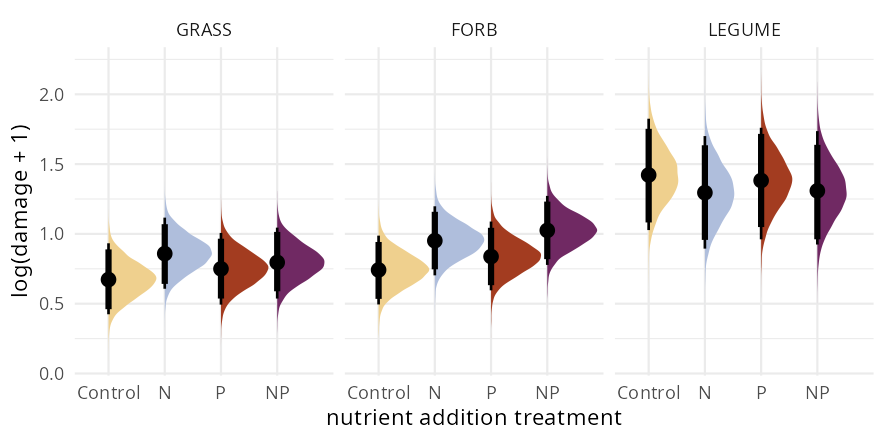
It looks like legumes tend to be preferred by (invertebrate) herbivores but there is also more uncertainty for their average level of damage. And here are the estimates for the average differences of the three treatments to the control:
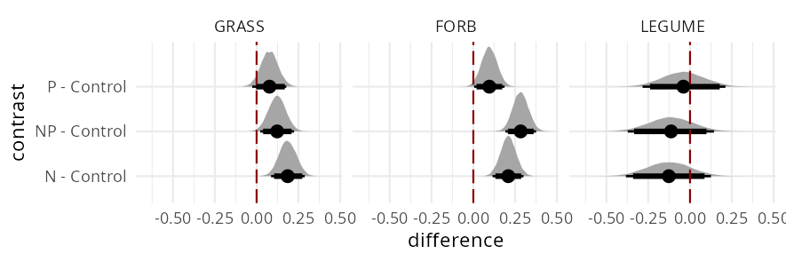
We see clear evidence of increased herbivory in both treatments with Nitrogen addition (N and NP) for grasses and forbs. Treatment plots with Phosphorus addition also show increased herbivory in grasses and forbs relative to controls but that difference is weaker.
But let’s do a posterior predictive check, to see how well our model reproduces the distribution of the data:
pp_check(S5.1, ndraws = 100)
Ouch5. The four spikes are the log-transformed midpoint values that our observations can take. They look like densities because density overlay is the default option in pp_check() but we just have four distinct values; a histogram would be more appropriate for these data.
pp_check(S5.1, ndraws = 5, type = "hist")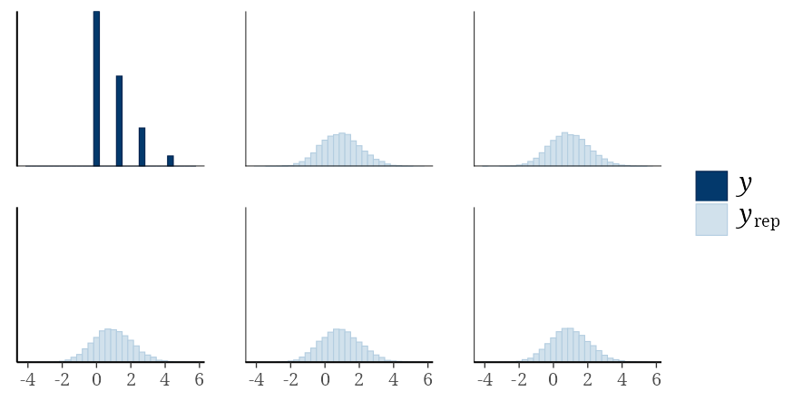
On the other hand, a density overlay is a perfectly valid choice for the kind of model we fitted. The real discrepancy here is between the model and the data. Anyway, this is a good-enough first diagnostic. If the light blue lines were properly overlaid on the dark blue line, we would be reassured. Unsurprisingly, our model cannot handle that. We are going to see whether we can do better.
By the way, a reasonable modification here would be to acknowledge that we are dealing with proportions and use a (zero inflated) Beta distribution. But this will not do any good before we move away from reducing our interval data to midpoint values.
ordinal regression
We are dealing with semi-quantitative proportional data that are intervals rather than precise values. However, before we try introducing the interval censoring explicitly into our model, I want to move in a different direction.
I will first lean into the semi-quantitativeness of things and treat the data as ordinal. We have four categories that represent no, little, some or extensive damage. I did not invest a lot of time coming up with these names; they are not important. What is important is that every level represents more damage than the previous one. A cumulative probit model (Bürkner and Vuorre 2019), which is what we are trying next, assumes that an ordinal response with k levels is partitioning a latent (unobserved) continuous variable. The model uses k−1 threshold parameters to partition that latent variable into k ordered categories; in our case, three thresholds for our four leaf damage levels. The cumulative distribution function (CDF) of the standard normal distribution is then used to compute the probability that the latent variable falls below each threshold. This corresponds to the cumulative probability of being in a given ordinal category or lower. The k thresholds are like intercepts in our model and their location along the latent scale is dependent on our predictors. The fact that I have written this paragraph does not mean that I find any of this intuitive. Repeated exposure helps.
Luckily for me and you, there is an excellent introduction6 to cumulative probit models out there, that is both comprehensive and accessible (h/t to Solomon Kurz). This means I can refer you to that for a deeper understanding of what these models do and how they accomplish it. Here we are just going to use such a model.
For a cumulative model, {brms} accepts response data in two possible types: either as integers (representing ordinal levels) or as an ordered factor. Since later on we are going to handle our levels as if they were integers (numeric even!), I will go with the first option7.
dataord = data %>%
mutate(# for the ordinal regression
damord = case_when(invert_damage.perc == 0 ~ 1L,
invert_damage.perc <= 5 ~ 2L,
invert_damage.perc <= 25 ~ 3L,
invert_damage.perc > 25 ~ 4L)
)Two things are different here. We have swapped the Gaussian distribution for the cumulative probit. We have also introduced a new relationship to be estimated, disc ~ 0 + fgroup. disc (for discrimination) is a distributional parameter. It relates to the variance of the latent variable, influencing the steepness of the CDF of the standard normal. Making disc dependent on fgroup means that we are also modeling the variance of the latent variable, allowing it to differ among groups. In other words, the transitions between damage levels can differ among groups, reflecting variation in the ability to discriminate between damage levels for grass, forb or legume leaves.
Normally, to model other distributional parameters—besides the mean—in {brms} we’d simply separate the mean model from the other parameter model with a comma. Here though, disc needs special handling because we need to not only remove the intercept but also switch off cell mean coding, with cmc=F, only for disc. Which is why we pass it into the model in a separate lf(). The rationale for this is is explained by Bürkner and Vuorre (2019) (section Unequal variances).
S5.1_ord = brm(
data = dataord,
bf(
damord ~ treat + fgroup + treat:fgroup +
(1 | site) +
(1 | taxon) +
(1 | site:plot:taxon)) +
lf(disc ~ 0 + fgroup, cmc = F),
family = cumulative("probit"),
iter = 6000,
warmup = 2000,
control = list(adapt_delta = .95),
chains = 4,
cores = 4,
seed = 42,
backend = "cmdstanr"
)Let’s start with the posterior predictive check:
pp_check(S5.1_ord, ndraws = 100)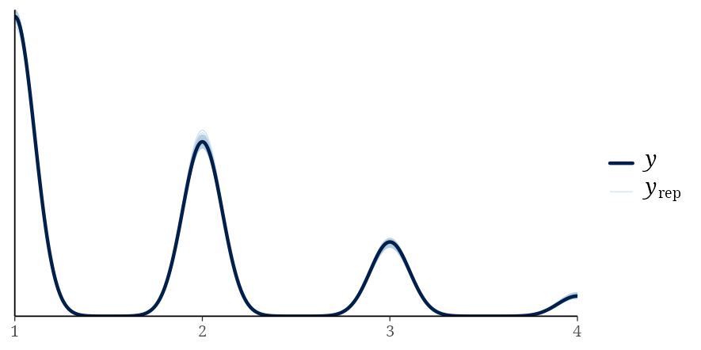
Again, this is not the most appropriate posterior predictive check we could do for this type of data but it is directly comparable to the very first one. You can see that the estimated “distribution” follows the spikes of the data. Here is a more appropriate option:
pp_check(S5.1_ord, type = "bars", ndraws = 100)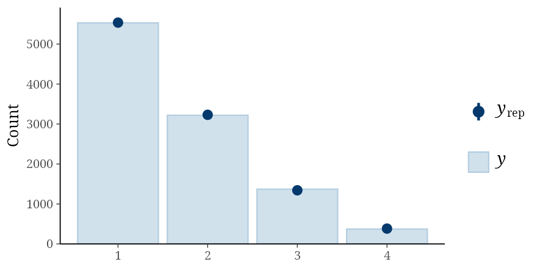
This model is also a good example where scrutinizing individual regression coefficients to make inference is not very helpful; everything is on the latent scale. We want to understand the model estimates in terms of the ordinal levels we have used for our response.
Show me anyway
Family: cumulative
Links: mu = probit; disc = log
Formula: damord ~ treat + fgroup + treat:fgroup + (1 | site) + (1 | taxon) + (1 | site:plot:taxon)
disc ~ 0 + fgroup
Data: dataord (Number of observations: 10491)
Draws: 4 chains, each with iter = 6000; warmup = 2000; thin = 1;
total post-warmup draws = 16000
Multilevel Hyperparameters:
~site (Number of levels: 27)
Estimate Est.Error l-95% CI u-95% CI Rhat Bulk_ESS Tail_ESS
sd(Intercept) 1.00 0.17 0.73 1.37 1.00 5743 9739
~site:plot:taxon (Number of levels: 2047)
Estimate Est.Error l-95% CI u-95% CI Rhat Bulk_ESS Tail_ESS
sd(Intercept) 0.52 0.02 0.47 0.57 1.00 6066 10089
~taxon (Number of levels: 153)
Estimate Est.Error l-95% CI u-95% CI Rhat Bulk_ESS Tail_ESS
sd(Intercept) 0.82 0.06 0.71 0.96 1.00 5740 9885
Regression Coefficients:
Estimate Est.Error l-95% CI u-95% CI Rhat Bulk_ESS Tail_ESS
Intercept[1] 0.56 0.23 0.10 1.02 1.00 4042 6809
Intercept[2] 1.99 0.23 1.52 2.44 1.00 4114 6817
Intercept[3] 3.24 0.24 2.76 3.71 1.00 4284 7173
treatN 0.28 0.08 0.13 0.43 1.00 10721 12681
treatNP 0.19 0.08 0.03 0.34 1.00 10673 12119
treatP 0.11 0.08 -0.05 0.26 1.00 11417 13157
fgroupFORB 0.11 0.17 -0.22 0.44 1.00 5435 8458
fgroupLEGUME 0.85 0.32 0.23 1.47 1.00 7937 10638
treatN:fgroupFORB 0.03 0.11 -0.17 0.24 1.00 10755 12253
treatNP:fgroupFORB 0.24 0.11 0.03 0.45 1.00 10985 12362
treatP:fgroupFORB 0.06 0.11 -0.15 0.27 1.00 11697 12046
treatN:fgroupLEGUME -0.47 0.23 -0.92 -0.03 1.00 15824 13784
treatNP:fgroupLEGUME -0.29 0.23 -0.74 0.15 1.00 15884 12544
treatP:fgroupLEGUME -0.17 0.22 -0.61 0.26 1.00 15672 13757
disc_fgroupFORB -0.10 0.03 -0.15 -0.04 1.00 14807 13558
disc_fgroupLEGUME -0.27 0.05 -0.38 -0.17 1.00 18522 13670
Draws were sampled using sample(hmc). For each parameter, Bulk_ESS
and Tail_ESS are effective sample size measures, and Rhat is the potential
scale reduction factor on split chains (at convergence, Rhat = 1).One way we can plot model estimates in the ordinal scale is the following. The y-axis is the relative probability of the four different levels. For example, looking at grasses across treatments, we see that the probability of what we called severe damage (level 4) is zero. No damage (level 1) has the highest probability followed by little damage (2). Conversely, legumes are the group with the highest probability of levels 3 and 4 among the three functional groups.
Show the code
p3 = dataord %>%
data_grid(treat = factor(c("Control","N","P","NP"),
levels = c("Control","N","P","NP")),
fgroup = factor(c("GRASS", "FORB", "LEGUME"),
levels = c("GRASS", "FORB", "LEGUME"))) %>%
add_epred_draws(S5.1_ord, re_formula = NA) %>%
ggplot(aes(x = .category, y = .epred)) +
stat_halfeye(point_interval = "mean_hdi",
.width = c(0.90, 0.95)) +
ylab("probability") +
xlab("damage level") +
theme_bw() +
theme(legend.position = "none") +
facet_grid(vars(fgroup), vars(treat))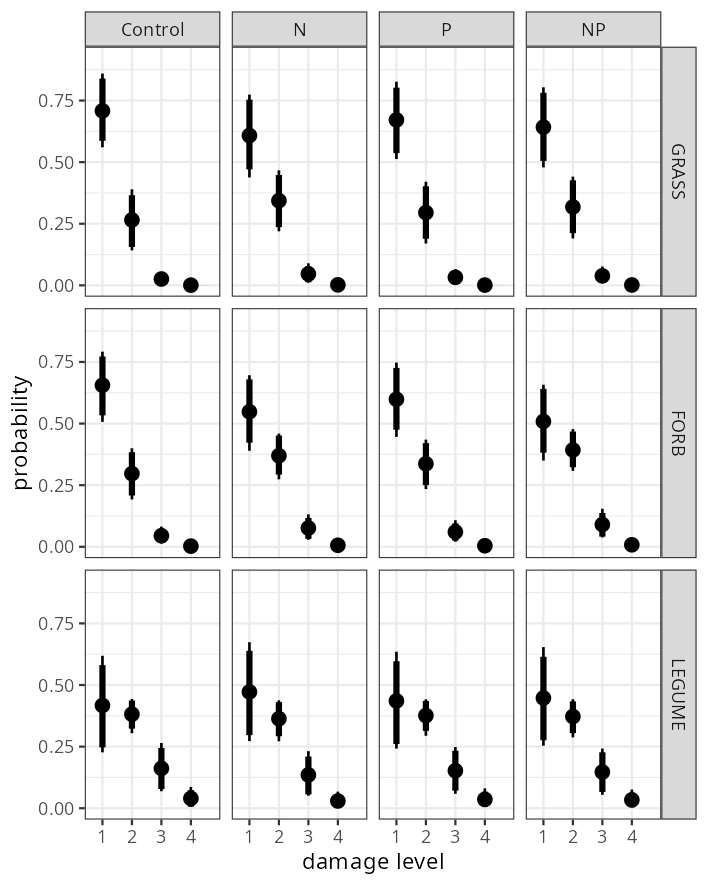
This way of looking at estimates is not very conducive to making comparisons. To do that, we can estimate the average level of damage for each group and treatment, treating our levels as integers, weighting them by their relative probabilities and calculating a weighted average. An average level of 1.5 would indicate damage between no and little. We do so per draw from the posterior. Then we can plot those estimates:
Show the code
p4 = dataord %>%
data_grid(treat = factor(c("Control","N","P","NP"),
levels = c("Control","N","P","NP")),
fgroup = factor(c("GRASS", "FORB", "LEGUME"),
levels = c("GRASS", "FORB", "LEGUME"))) %>%
add_epred_draws(S5.1_ord, re_formula = NA) %>%
group_by(treat, fgroup, .draw) %>%
# calculate weighted average per draw
summarise(damord = weighted.mean(as.numeric(.category), .epred)) %>%
ggplot(aes(x = treat, y = damord, fill = treat)) +
stat_halfeye(point_interval = "mean_hdi",
.width = c(0.90, 0.95)) +
scale_fill_manual(values = c("#efd08e","#afbedc","#a33c20", "#702963")) +
ylab("average damage level") +
xlab("nutrient addition treatment") +
theme_minimal() +
theme(legend.position = "none") +
facet_grid(. ~ fgroup)
p5 = dataord %>%
data_grid(treat = factor(c("Control","N","P","NP"),
levels = c("Control","N","P","NP")),
fgroup = factor(c("GRASS", "FORB", "LEGUME"),
levels = c("GRASS", "FORB", "LEGUME"))) %>%
add_epred_draws(S5.1_ord, re_formula = NA) %>%
group_by(treat, fgroup, .draw) %>%
summarise(damord = weighted.mean(as.numeric(.category), .epred)) %>%
compare_levels(damord, by = treat,
comparison = control) %>%
rename(diff_in_level = damord) %>%
ggplot(aes(x = diff_in_level, y = treat)) +
stat_halfeye(point_interval = "mean_hdi",
.width = c(0.90, 0.95)) +
geom_vline(xintercept = 0, linetype = "longdash",
color = "darkred") +
ylab("contrast") +
xlab("difference") +
facet_wrap(~fgroup) +
theme_minimal()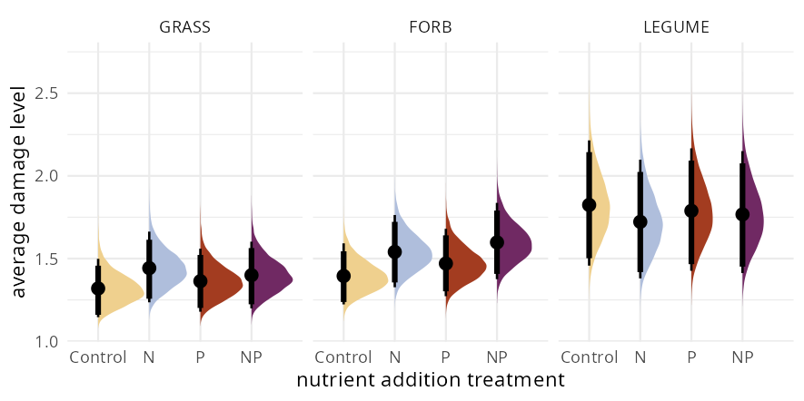
And similarly we can plot the estimates for average differences:
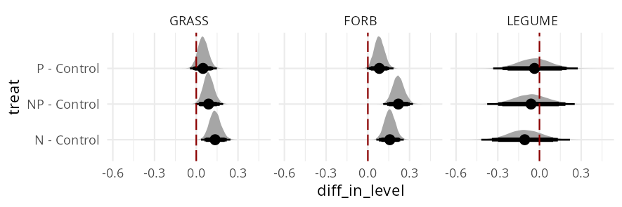
Even though the two models are very different in terms of their specification, the conclusions we would draw from the estimates of this model are qualitatively similar to those from the first one. However, based on the posterior predictive checks, this is a model whose estimates can be more confident about.
zero-inflated censored Beta regression
Buckle up; things are about to escalate quickly.
We are finally going to introduce censoring explicitly into our model. Let’s reconsider the data. We are dealing with observations of proportional leaf damage by herbivores, which have been collected in a way that produces censored observations. Continuous proportions bound in the open unit interval (0,1) are readily modeled with a Beta distribution. These data however include several—in fact the majority—of cases with no evidence of damage; they are in the [0,1) interval. A mixture model, zero inflated8 Beta regression is the way to go here. We are modeling the probability of zero with a logistic regression and we are modeling the average proportion, for the non-zero cases, with a Beta distribution. This is supported in {brms} by specifying family = zero_inflated_beta.
Next comes the censoring. How does Stan (and brms) handle censoring? Observations are indexed as being left-, right- interval- or not censored. Then for left and right censored cases, values represent the threshold of measurement. For interval censored cases, values represent the lower bound of the interval and we have an auxiliary term for the upper bound. In {brms} syntax, this looks like this:
ycens | cens(censor, upper)where censor is the type of censoring and upper is the upper bound for interval censored observations. What goes into ycens depends on the type of censoring, as described just above.
First, we have non-censored observations; zeros that denote absence of damage. Then, we have observations for which we know that the damage is up to 5%, those for which it is more than 5% and up to 25%, and those for which it is more than 25%. Because we are dealing with proportional data, which are inherently bound, it is natural to think of all of these categories as intervals. So the code below, would be a reasonable way to specify these intervals. Notice that, somewhat arbitrarily, I have set the lower limit of the first interval slightly above zero (0.01) and the upper limit of the last interval slightly below 1 (0.99). We also need to specify the type of censoring, in this case interval.
datacens = data %>%
mutate(# the lower limits of intervals
damagelow = case_when(invert_damage.perc == 0 ~ 0,
invert_damage.perc <= 5 ~ .01,
invert_damage.perc <= 25 ~ .05,
invert_damage.perc > 25 ~ .25),
# the upper limits of intervals
damagehigh = case_when(invert_damage.perc == 0 ~ 0,
invert_damage.perc <= 5 ~ .05,
invert_damage.perc <= 25 ~ .25,
invert_damage.perc > 25 ~ .99),
# the type of intervals
censor = case_when(invert_damage.perc == 0 ~ "none",
invert_damage.perc <= 5 ~ "interval",
invert_damage.perc <= 25 ~ "interval",
invert_damage.perc > 25 ~ "interval")) and therefore, on the left-hand side of the model formula we would have:
damagelow | cens(censor, damagehigh)It turns out that this approach, and specifically those arbitrary thresholds, can get us into trouble. We can try to avoid the problem by making these thresholds really close to zero and one (1e-7 and 1-1e-7 perhaps). But a more reliable way to proceed here, is to treat our >25% observations as right censored and, perhaps less intuitively, our non-zero <5% observations as left censored:
datacens = data %>%
mutate(# the lower limits of intervals
damagelow = case_when(invert_damage.perc == 0 ~ 0,
invert_damage.perc <= 5 ~ .01,
invert_damage.perc <= 25 ~ .05,
invert_damage.perc > 25 ~ .25),
# the upper limits of intervals
damagehigh = case_when(invert_damage.perc == 0 ~ 0,
invert_damage.perc <= 5 ~ .05,
invert_damage.perc <= 25 ~ .25,
invert_damage.perc > 25 ~ .99),
# the type of intervals
censor = case_when(invert_damage.perc == 0 ~ "none",
invert_damage.perc <= 5 ~ "left",
invert_damage.perc <= 25 ~ "interval",
invert_damage.perc > 25 ~ "right"),
# what goes into ycens depends on the type of censoring
ycens = case_when(censor == "none" ~ 0,
censor == "left" ~ damagehigh,
censor == "interval" ~ damagelow,
censor == "right" ~ damagelow)) This is what the {brms} formula for such a model looks like:
formula = bf(
ycens | cens(censor, damagehigh) ~ treat + fgroup + treat:fgroup +
(1 | site) +
(1 | taxon) +
(1 | site:plot:taxon),
zi ~ treat + fgroup + treat:fgroup +
(1 | site) +
(1 | taxon) +
(1 | site:plot:taxon)
)The other formula is the zero inflation part. The full model would look like this:
S5.1_cens = brm(
data = datacens,
bf(
ycens | cens(censor, damagehigh) ~ treat + fgroup + treat:fgroup +
(1 | site) +
(1 | taxon) +
(1 | site:plot:taxon),
zi ~ treat + fgroup + treat:fgroup +
(1 | site) +
(1 | taxon) +
(1 | site:plot:taxon)
),
family = zero_inflated_beta(),
iter = 6000,
warmup = 2000,
chains = 4,
cores = 4,
seed = 123,
backend = "cmdstanr"
)We are actually… not going to fit this model! I have tried that and, after the >8 hours it took to finish sampling, it turned out its performance was abysmal. Each chain was doing its own thing (high Rhats) and I could count the Bulk Effective Samples in my fingers. Tinkering with the model (non-flat priors, longer warmup) did not help. Now admittedly, a more seasoned Stan user might have accomplished something better but this looks like a very hard model to fit.
poking under the hood
According to the Stan manual, there are two ways to model censored data. One of them “is to treat the censored data as missing data that is constrained to fall in the censored range of values”. I find this is a very intuitive approach, as it maps right onto the description of censored data I gave at the introduction. It is not however, the method currently used by {brms}; instead it is using the second method which “is integrating out censored values”. I do not pretend to understand the second method. I can imagine that not having to impute the censored data can have sampling efficiency benefits under some circumstances but it does not seem to work here…
While digging around in the {brms} github repository, I found a feature request, submitted by Hans Van Calster, for {brms} to provide support for the first method, the data augmentation approach, that imputes the censored values. He also provided Stan code to show what this would look like, following {brms} conventions for writing Stan code.
One nice feature of {brms} is that we can use the stancode() function to get the Stan code generated by {brms} for any given model.
stancode(formula, data = datacens, family = zero_inflated_beta())We can then modify this code and use it to fit a model directly with Cmdstan. Finally, we can pass the fitted object back into an empty brm object. The benefit of doing this is that any diagnostics, post-processing calculations or plotting we do is within territory familiar to {brms} users.
In the code I am showing below, everything except the bits that relate to censoring is as it was generated by {brms}. The censoring bits come from Van Calster’s example. I have highlighted those using //////// borders. I think I’ve put everything in its right place.
// generated with {brms} 2.22.8 **and modified**
functions {
real zero_inflated_beta_lpdf(real y, real mu, real phi, real zi) {
row_vector[2] shape = [mu * phi, (1 - mu) * phi];
if (y == 0) {
return bernoulli_lpmf(1 | zi);
} else {
return bernoulli_lpmf(0 | zi) +
beta_lpdf(y | shape[1], shape[2]);
}
}
}
data {
int<lower=1> N; // total number of observations
vector[N] Y; // response variable
///////////////////////////////////////////////////////////////////////////////////////
// censoring indicator: 0 = event, 1 = right, -1 = left, 2 = interval censored
array[N] int<lower=-1,upper=2> cens;
// right censor points for interval censoring
vector[N] rcens;
///////////////////////////////////////////////////////////////////////////////////////
int<lower=1> K; // number of population-level effects
matrix[N, K] X; // population-level design matrix
int<lower=1> Kc; // number of population-level effects after centering
int<lower=1> K_zi; // number of population-level effects
matrix[N, K_zi] X_zi; // population-level design matrix
int<lower=1> Kc_zi; // number of population-level effects after centering
// data for group-level effects of ID 1
int<lower=1> N_1; // number of grouping levels
int<lower=1> M_1; // number of coefficients per level
array[N] int<lower=1> J_1; // grouping indicator per observation
// group-level predictor values
vector[N] Z_1_1;
// data for group-level effects of ID 2
int<lower=1> N_2; // number of grouping levels
int<lower=1> M_2; // number of coefficients per level
array[N] int<lower=1> J_2; // grouping indicator per observation
// group-level predictor values
vector[N] Z_2_1;
// data for group-level effects of ID 3
int<lower=1> N_3; // number of grouping levels
int<lower=1> M_3; // number of coefficients per level
array[N] int<lower=1> J_3; // grouping indicator per observation
// group-level predictor values
vector[N] Z_3_1;
// data for group-level effects of ID 4
int<lower=1> N_4; // number of grouping levels
int<lower=1> M_4; // number of coefficients per level
array[N] int<lower=1> J_4; // grouping indicator per observation
// group-level predictor values
vector[N] Z_4_zi_1;
// data for group-level effects of ID 5
int<lower=1> N_5; // number of grouping levels
int<lower=1> M_5; // number of coefficients per level
array[N] int<lower=1> J_5; // grouping indicator per observation
// group-level predictor values
vector[N] Z_5_zi_1;
// data for group-level effects of ID 6
int<lower=1> N_6; // number of grouping levels
int<lower=1> M_6; // number of coefficients per level
array[N] int<lower=1> J_6; // grouping indicator per observation
// group-level predictor values
vector[N] Z_6_zi_1;
int prior_only; // should the likelihood be ignored?
}
transformed data {
matrix[N, Kc] Xc; // centered version of X without an intercept
vector[Kc] means_X; // column means of X before centering
matrix[N, Kc_zi] Xc_zi; // centered version of X_zi without an intercept
vector[Kc_zi] means_X_zi; // column means of X_zi before centering
for (i in 2:K) {
means_X[i - 1] = mean(X[, i]);
Xc[, i - 1] = X[, i] - means_X[i - 1];
}
for (i in 2:K_zi) {
means_X_zi[i - 1] = mean(X_zi[, i]);
Xc_zi[, i - 1] = X_zi[, i] - means_X_zi[i - 1];
}
///////////////////////////////////////////////////////////////////////////////////////
// censoring indices
int Nevent = 0;
int Nrcens = 0;
int Nlcens = 0;
int Nicens = 0;
array[N] int Jevent;
array[N] int Jrcens;
array[N] int Jlcens;
array[N] int Jicens;
for (n in 1:N) {
if (cens[n] == 0) {
Nevent += 1;
Jevent[Nevent] = n;
} else if (cens[n] == 1) {
Nrcens += 1;
Jrcens[Nrcens] = n;
} else if (cens[n] == -1) {
Nlcens += 1;
Jlcens[Nlcens] = n;
} else if (cens[n] == 2) {
Nicens += 1;
Jicens[Nicens] = n;
}
}
///////////////////////////////////////////////////////////////////////////////////////
}
parameters {
vector[Kc] b; // regression coefficients
real Intercept; // temporary intercept for centered predictors
real<lower=0> phi; // precision parameter
vector[Kc_zi] b_zi; // regression coefficients
real Intercept_zi; // temporary intercept for centered predictors
vector<lower=0>[M_1] sd_1; // group-level standard deviations
array[M_1] vector[N_1] z_1; // standardized group-level effects
vector<lower=0>[M_2] sd_2; // group-level standard deviations
array[M_2] vector[N_2] z_2; // standardized group-level effects
vector<lower=0>[M_3] sd_3; // group-level standard deviations
array[M_3] vector[N_3] z_3; // standardized group-level effects
vector<lower=0>[M_4] sd_4; // group-level standard deviations
array[M_4] vector[N_4] z_4; // standardized group-level effects
vector<lower=0>[M_5] sd_5; // group-level standard deviations
array[M_5] vector[N_5] z_5; // standardized group-level effects
vector<lower=0>[M_6] sd_6; // group-level standard deviations
array[M_6] vector[N_6] z_6; // standardized group-level effects
///////////////////////////////////////////////////////////////////////////////////////
// latent imputed values for censored observations
vector<lower=Y[Jrcens[1:Nrcens]], upper=1>[Nrcens] Yright;
vector<lower=0, upper=Y[Jlcens[1:Nlcens]]>[Nlcens] Yleft;
vector<lower=Y[Jicens[1:Nicens]], upper=rcens[Jicens[1:Nicens]]>[Nicens] Yint;
///////////////////////////////////////////////////////////////////////////////////////
}
transformed parameters {
vector[N_1] r_1_1; // actual group-level effects
vector[N_2] r_2_1; // actual group-level effects
vector[N_3] r_3_1; // actual group-level effects
vector[N_4] r_4_zi_1; // actual group-level effects
vector[N_5] r_5_zi_1; // actual group-level effects
vector[N_6] r_6_zi_1; // actual group-level effects
real lprior = 0; // prior contributions to the log posterior
r_1_1 = (sd_1[1] * (z_1[1]));
r_2_1 = (sd_2[1] * (z_2[1]));
r_3_1 = (sd_3[1] * (z_3[1]));
r_4_zi_1 = (sd_4[1] * (z_4[1]));
r_5_zi_1 = (sd_5[1] * (z_5[1]));
r_6_zi_1 = (sd_6[1] * (z_6[1]));
lprior += student_t_lpdf(Intercept | 3, 0, 2.5);
lprior += gamma_lpdf(phi | 0.01, 0.01);
lprior += logistic_lpdf(Intercept_zi | 0, 1);
lprior += student_t_lpdf(sd_1 | 3, 0, 2.5)
- 1 * student_t_lccdf(0 | 3, 0, 2.5);
lprior += student_t_lpdf(sd_2 | 3, 0, 2.5)
- 1 * student_t_lccdf(0 | 3, 0, 2.5);
lprior += student_t_lpdf(sd_3 | 3, 0, 2.5)
- 1 * student_t_lccdf(0 | 3, 0, 2.5);
lprior += student_t_lpdf(sd_4 | 3, 0, 2.5)
- 1 * student_t_lccdf(0 | 3, 0, 2.5);
lprior += student_t_lpdf(sd_5 | 3, 0, 2.5)
- 1 * student_t_lccdf(0 | 3, 0, 2.5);
lprior += student_t_lpdf(sd_6 | 3, 0, 2.5)
- 1 * student_t_lccdf(0 | 3, 0, 2.5);
}
model {
// likelihood including constants
if (!prior_only) {
// initialize linear predictor term
vector[N] mu = rep_vector(0.0, N);
// initialize linear predictor term
vector[N] zi = rep_vector(0.0, N);
mu += Intercept + Xc * b;
zi += Intercept_zi + Xc_zi * b_zi;
for (n in 1:N) {
// add more terms to the linear predictor
mu[n] += r_1_1[J_1[n]] * Z_1_1[n] + r_2_1[J_2[n]] * Z_2_1[n] + r_3_1[J_3[n]] * Z_3_1[n];
}
for (n in 1:N) {
// add more terms to the linear predictor
zi[n] += r_4_zi_1[J_4[n]] * Z_4_zi_1[n] + r_5_zi_1[J_5[n]] * Z_5_zi_1[n] + r_6_zi_1[J_6[n]] * Z_6_zi_1[n];
}
mu = inv_logit(mu);
zi = inv_logit(zi);
///////////////////////////////////////////////////////////////////////////////////////
// Uncensored data
for (i in 1:Nevent) {
int n = Jevent[i];
target += zero_inflated_beta_lpdf(Y[n] | mu[n], phi, zi[n]);
}
// Right-censored
for (i in 1:Nrcens) {
int n = Jrcens[i];
target += zero_inflated_beta_lpdf(Yright[i] | mu[n], phi, zi[n]);
}
// Left-censored
for (i in 1:Nlcens) {
int n = Jlcens[i];
target += zero_inflated_beta_lpdf(Yleft[i] | mu[n], phi, zi[n]);
}
// Interval-censored
for (i in 1: Nicens) {
int n = Jicens[i];
target += zero_inflated_beta_lpdf(Yint[i] | mu[n], phi, zi[n]);
}
}
///////////////////////////////////////////////////////////////////////////////////////
// priors including constants
target += lprior;
target += std_normal_lpdf(z_1[1]);
target += std_normal_lpdf(z_2[1]);
target += std_normal_lpdf(z_3[1]);
target += std_normal_lpdf(z_4[1]);
target += std_normal_lpdf(z_5[1]);
target += std_normal_lpdf(z_6[1]);
}
generated quantities {
// actual population-level intercept
real b_Intercept = Intercept - dot_product(means_X, b);
// actual population-level intercept
real b_zi_Intercept = Intercept_zi - dot_product(means_X_zi, b_zi);
}Then we can save this as a .stan file and compile it with cmdstan_model().
sdata = brms::make_standata(formula, family = zero_inflated_beta(), data = datacens)
model = cmdstan_model("mcens.stan")
stanfit = model$sample(
data = sdata,
chains = 4,
iter_warmup = 2000,
iter_sampling = 4000,
seed = 123,
parallel_chains = 4
)
# All 4 chains finished successfully.
# Mean chain execution time: 2501.8 seconds.
# Total execution time: 2514.2 seconds.
S5.1_cens = brm(formula,
family = zero_inflated_beta(),
data = datacens,
empty = TRUE)
S5.1_cens$fit = read_csv_as_stanfit(stanfit$output_files(),
model = model)
S5.1_cens = rename_pars(S5.1_cens)Having fed the model output back into {brms}, we can then use the same procedure as before to handle posterior draws and plot estimates:
Show the code
p6 = datacens %>%
data_grid(treat = factor(c("Control","N","P","NP"),
levels = c("Control","N","P","NP")),
fgroup = factor(c("GRASS", "FORB", "LEGUME"),
levels = c("GRASS", "FORB", "LEGUME"))) %>%
add_epred_draws(S5.1_cens, re_formula = NA) %>%
ggplot(aes(x = treat, y = .epred, fill = treat)) +
stat_halfeye(point_interval = "mean_hdi",
.width = c(0.90, 0.95)) +
scale_fill_manual(values = c("#efd08e","#afbedc","#a33c20", "#702963")) +
ylab("damage proportion") +
xlab("nutrient addition treatment") +
theme_minimal() +
theme(legend.position = "none") +
facet_grid(. ~ fgroup)
p7 = datacens %>%
data_grid(treat = factor(c("Control","N","P","NP"),
levels = c("Control","N","P","NP")),
fgroup = factor(c("GRASS", "FORB", "LEGUME"),
levels = c("GRASS", "FORB", "LEGUME"))) %>%
add_epred_draws(S5.1_cens, re_formula = NA) %>%
compare_levels(.epred, by = treat,
comparison = control) %>%
ggplot(aes(x = .epred, y = treat)) +
stat_halfeye(point_interval = "mean_hdi",
.width = c(0.90, 0.95, .99)) +
geom_vline(xintercept = 0, linetype = "longdash",
color = "darkred") +
ylab("contrast") +
xlab("difference") +
facet_wrap(~fgroup) +
theme_minimal()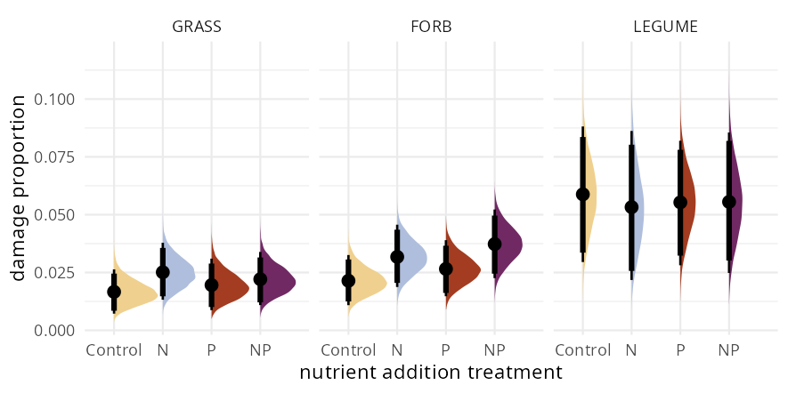
Same for contrasts:
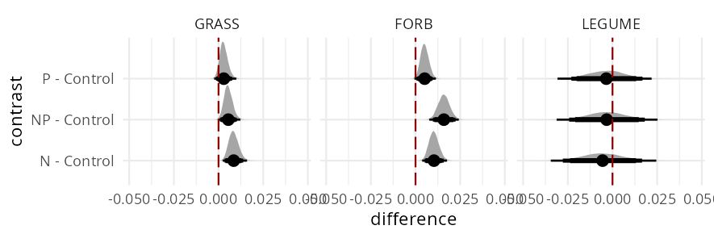
But we still need to do a posterior predictive check to evaluate this model. Using pp_check() does produce a plot but as it cannot handle the censored values (there is a warning) it is not informative. Originally, I was not even sure what such a plot should look like. Overcoming this obstacle requires thinking about the logic behind these checks and how pp_check() works under the hood. Let’s start there.
The workhorse behind pp_check() is the posterior_predict() function which, as the name indicates, generates predictions from the joint posterior distribution. These predictions are produced by combining the uncertainty of all the relevant coefficients of the model, including the distributional parameter(s) (phi in the case of the Beta distribution) as well as the group level (“random”) terms. The best way I have seen this described is the following: If we were to collect one more observation (per combination of predictors e.g. for legumes in a control plot in a given site etc) what would be the value of this observation? These predictions describe the uncertainty for these values and together they follow a distribution that should closely align with the distribution of the data if a model is suitable—if it sufficiently approximates the data generating process.
In our case, we have assumed that the data generating process can be approximated by a mixture of a Bernoulli and a Beta distribution (our zero inflated Beta) conditional on our predictors. So posterior_predict() generates predictions from such a model. How do we compare those to our interval censored data? The solution I resorted to was to impose the censoring scheme to the model predictions as well. If we were observing data generated from a zero inflated Beta distribution and we used the same scheme as the one used to collect the actual data, they would be recorded using the same intervals. So why not compare the bar plot of the observed data to the censored model predictions!
Here is a function to do just that:
ppc = function(fit, data, ndraws = 10) {
levels = c("0",
"0.01–0.05",
"0.05–0.25",
"0.25–0.99")
observed = case_when(data$invert_damage.perc == 0 ~ levels[1],
data$invert_damage.perc <= 5 ~ levels[2],
data$invert_damage.perc <= 25 ~ levels[3],
data$invert_damage.perc > 25 ~ levels[4])
ypred = posterior_predict(fit, ndraws = ndraws)
bins = function(x) {
case_when(x == 0 ~ levels[1],
x <= 0.05 ~ levels[2],
x <= 0.25 ~ levels[3],
x > 0.25 ~ levels[4])
}
sim_bins = apply(ypred, 1, function(x) table(factor(bins(x),
levels = levels)))
sim_df = as.data.frame(t(sim_bins))
sim_df$draw = 1:nrow(sim_df)
obs_counts = table(factor(observed,
levels = levels))
obs_df = data.frame(Category = names(obs_counts),
Observed = as.numeric(obs_counts))
sim_summary = sim_df %>%
pivot_longer(cols = -draw,
names_to = "Category",
values_to = "Simulated") %>%
group_by(Category) %>%
summarise(mean = mean(Simulated),
lower = quantile(Simulated, 0.05),
upper = quantile(Simulated, 0.95))
plot_df = left_join(obs_df, sim_summary, by = "Category")
ggplot(plot_df, aes(x = Category)) +
geom_col(aes(y = Observed), fill = "#a2c0d9", alpha = 0.7) +
geom_pointrange(aes(y = mean, ymin = lower, ymax = upper),
color = "#152736", size = .25, fatten = 2) +
labs(y = "Count", x = "Damage category",
subtitle = "bars = y, pointrange = yrep mean & 90% CI") +
theme_minimal()
}blabla
ppc(S5.1_cens, datacens, ndraws = 100)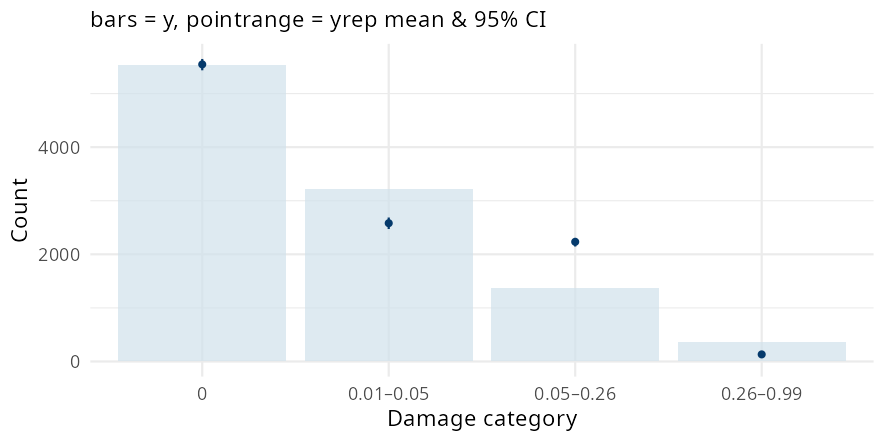
Oops! This is not great. It looks like the Bernoulli part of our model is doing just fine, predicting as many zeros as we have in the data. The Beta part of the model however, is either under- or overpredicting the amount of data we have in each interval. My less-than-half-educated hunch here is that, with only three intervals in the (0, 1) range, the model is struggling where to attribute variation. I suspect that this type of model would work better if intervals where variable across observations9 or if we had higher resolution i.e. more levels.
I want to test that intuition and more specifically the second case; what if the data were collected with a 0, (0, 5], (5, 10], (10, 20], (20, 30], (30, 50], (50, 70], (70, 100) scheme? Would this model perform better with seven intervals instead of just three? We don’t have that kind of data. But we have just fitted a zero inflated Beta regression model that can generate predictions in the [0, 1) interval! So we can create a dataset with the exact same structure as our real data (sites, plots, taxa, treatments etc) and generate a single draw from the predictive distribution of our model. Remember that such predictions are the answer to the question “what would be the value of a new observation?”. So we are making a prediction for 10491 such new observations, one for each site:treatment:plot:group:taxon:replicate combination of our data. Then we can impose on this model-generated dataset the original censoring scheme and the high-resolution one, fit the same model on both and compare.
newdata = datacens %>%
select(site:taxon_replicate.plot) %>%
add_predicted_draws(S5.1_cens, ndraws = 1,
re_formula = NULL,
seed = 42) %>%
ungroup()
head(newdata, 1:10)Now we impose the two censoring methods:
# the original method
newcens1 = newdata %>%
mutate(# the lower limits of intervals
damagelow = case_when(.prediction == 0 ~ 0,
.prediction < .06 ~ .01,
.prediction < .26 ~ .06,
.prediction >= .26 ~ .26),
# the upper limits of intervals
damagehigh = case_when(.prediction == 0 ~ 0,
.prediction < .06 ~ .05,
.prediction < .26 ~ .25,
.prediction >= .26 ~ .99),
# the type of intervals
censor = case_when(.prediction == 0 ~ "none",
.prediction < .06 ~ "interval",
.prediction < .26 ~ "interval",
.prediction >= .26 ~ "interval"))
# the high-resolution method
newcens2 = newdata %>%
mutate(# the lower limits of intervals
damagelow = case_when(.prediction == 0 ~ 0,
.prediction <= .05 ~ .01,
.prediction <= .10 ~ .05,
.prediction <= .20 ~ .10,
.prediction <= .30 ~ .20,
.prediction <= .50 ~ .30,
.prediction <= .70 ~ .50,
.prediction > .70 ~ .70,),
# the upper limits of intervals
damagehigh = case_when(.prediction <= .05 ~ .05,
.prediction <= .10 ~ .10,
.prediction <= .20 ~ .20,
.prediction <= .30 ~ .30,
.prediction <= .50 ~ .50,
.prediction <= .70 ~ .70,
.prediction > .70 ~ .99,),
# the type of intervals
censor = case_when(.prediction == 0 ~ "none",
.prediction <= .05 ~ "interval",
.prediction <= .10 ~ "interval",
.prediction <= .20 ~ "interval",
.prediction <= .30 ~ "interval",
.prediction <= .50 ~ "interval",
.prediction <= .70 ~ "interval",
.prediction > .70 ~ "interval")) Then we fit the model to the two datasets as before.
Show the code
sdata1 = brms::make_standata(formula, family = zero_inflated_beta(), data = newcens1)
sdata2 = brms::make_standata(formula, family = zero_inflated_beta(), data = newcens2)
model <- cmdstan_model("mcens.stan")
stanfit1 <- model$sample(
data = sdata1,
chains = 4,
iter_warmup = 2000,
iter_sampling = 4000,
seed = 123,
parallel_chains = 4
)
stanfit2 <- model$sample(
data = sdata2,
chains = 4,
iter_warmup = 2000,
iter_sampling = 4000,
seed = 123,
parallel_chains = 4
)TODO: Examine why the censored model performs poorly relative to ordinal, by generating data from the predictive distribution and then: censoring them with the existing scheme, censoring them with a scheme with more resolution e.g. 0, 0-5, 5-10, 10-20, 20-40, 40-100.
easy does it?
A common experience among methods–pedantsoriented people, is that a crude model, which does not quite capture the data generating process, can often yield estimates and lead to conclusions similar to a more sophisticated model that is in principle more well-suited to the task. Using the latter is not just a matter of being aware of the available options; it often involves more fuss. So why bother? Was all this a bit masturbatory? I think “often” is the crux here; if the crude model gives reliable estimates 99 times out of a 100, without a more appropriate model to compare it to, you don’t know whether your case is one among the 99 or the odd one out. It’s not a binary distinction; some modeling options will be more appropriate than others, some are maybe equally legitimate ways to tackle a problem. But, even though increasing sophistication tends to have diminishing returns, you don’t know the cost of convenience in advance. And if you have taken the trouble of going the extra mile, then you have no reason to fall back to a simpler method...
References
Bürkner, Paul-Christian, and Matti Vuorre. 2019. “Ordinal Regression Models in Psychology: A Tutorial.” Advances in Methods and Practices in Psychological Science 2 (1): 77–101. https://doi.org/10.1177/2515245918823199.
Daubenmire, R. F. 1959. “A Canopy-Coverage Method of Vegetational Analysis.” Northwest Science 33: 43–64.
Ebeling, Anne, Alex T. Strauss, Peter B. Adler, Carlos A. Arnillas, Isabel C. Barrio, Lori A. Biederman, Elizabeth T. Borer, et al. 2021. “Nutrient Enrichment Increases Invertebrate Herbivory and Pathogen Damage in Grasslands.” Journal of Ecology, October, 1365–2745.13801. https://doi.org/10.1111/1365-2745.13801.
Footnotes
and pathogen damage but we will leave this aside.↩︎
and frustratingly, for weirdos like me,↩︎
The authors coded the treatments different from what I do here and handled the N:P combination as a statistical interaction. For simplicity, I chose to use control, N, P and NP as four levels in one “treatment” predictor. This will make plotting predictions easier without having a real influence on the estimated differences of interest.↩︎
A more complex model is worth considering here as, in such a distributed experiment, the treatment effect may vary by site. Similarly, the differences between functional groups may vary by site, given that some sites will not share species, so the functional groups can be represented by different taxa. I prefer to leave all that aside and keep the structure of the model similar to that in the paper.↩︎
Pearl-clutching intensifies.↩︎
don’t open that in firefox or the math won’t show properly…↩︎
Keep in mind that if you opt for a factor it will need to be explicitly ordered correctly or it will be ordered alphabetically.↩︎
augmented if we want to be pedantic↩︎
Not realistic for our type of data because of the standardized measurement scheme but possible for censored data in general.↩︎